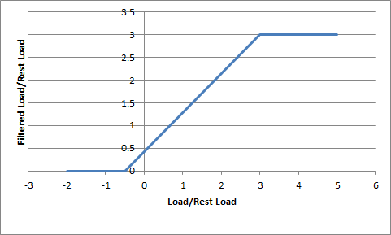

Vehicles¶
PhysX support for vehicles has been significantly reworked in 3.x. In place of the NxWheelShape class of 2.8.x, a more optimal integration of the core PhysX SDK and vehicle simulation code has been developed. More specifically, the vehicles component now sits outside the core SDK in a manner similar to PhysXExtensions. This change allows vehicles to be updated in a single pass as well as promoting a more intuitive approach to vehicle modelling data. Vehicles support has been extended from the suspension/wheel/tire modelling of 2.8.x to a more complete model that couples modular vehicle components including engine, clutch, gears, autobox, differential, wheels, tires, suspensions, and chassis. A quick glance at the data structures in PxVehicleComponents.h will provide a flavour of the behaviors supported by PhysX vehicles.
The vehicle SDK can be thought of as having two separate components: the core vehicle SDK and an optional set of utility classes and functions that are provided as a reference solution to common problems in game vehicle dynamics. The utility classes and functions may be found in PxVehicleUtilControl.h, PxVehicleUtilSetup.h, and PxVehicleUtilTelemetry.h, while the remaining files make up the core vehicle SDK. It is important to note that these utility classes are provided only as an example solution to common game vehicle problems. It is quite possible that many developers will be able to use these utility classes directly without modification. However, it is expected that many developers will use these classes as a starting point for integrating the physx core vehicle SDK with gameplay code. An example might be the code that filters the raw inputs from a gamepad controller in order to generate meaningful acceleration, brake and steer values that can be passed to the core SDK. The implementation provided might be unsuitable for some developers because it is written with specific assumptions about the kind of smoothing required to generate enjoyable gameplay. It is perfectly reasonable that some developers will consider these assumptions to be at odds with the gameplay requirements of their project. Developers who find themselves in this situation are invited to use the given implementation as a reference or even to independently develop an alternative if they wish. Other utility classes include data structures that record telemetry data in real time and helper functions to enable 3-wheeled cars.
In the following Sections the steps required to create and update a PhysX vehicle shall be discussed. The use of filter shaders to mark shapes as drivable and non-drivable shall be presented, as well as a demonstration of how to set up the friction of different combinations of tire type and drivable surface type. Following this, the recording and visualization of vehicle telemetry data is introduced with reference to tuning and debugging vehicle behaviors. Additionally, some of the key functions to query the internal vehicle state shall be introduced. The last Section details the steps required to set up 3-wheeled and N-wheeled cars and tanks. References to example code in SampleVehicle is made throughout.
Vehicle SDK Initialization¶
Before using the vehicle sdk it must first be initialized in order to set up a number of threshold values from various tolerance scales. This is as straightforward as calling the following function:
PX_C_EXPORT bool PX_CALL_CONV PxInitVehicleSDK(PxPhysics& physics);
This function should be called after setting up the required PxPhysics and PxFoundation instances.
As expected, the vehicle sdk also has a shutdown process which needs to be invoked:
PX_C_EXPORT void PX_CALL_CONV PxCloseVehicleSDK();
This needs to be called before the PxPhysics instance and PxFoundation instance are released; that is, the order of shutdown is the reverse of the initialisation order.
Vehicle Creation¶
In this Section the process of vehicle creation shall be decomposed into an intuitive sequence of simple procedures. Each of these procedures will be explained in turn.
The first step in the process is to configure the data structures that completely describe the vehicle and its components:
PxVehicleWheelsSimData* wheelsSimData=PxVehicleWheelsSimData::allocate(4);
PxVehicleDriveSimData4W driveSimData;
The above code instantiates the data structures for the wheels of a 4-wheeled car, as well as the data structures for non-wheel data such as engine, clutch, gears etc. With the exception of geometry data, the data structures are all given the default values of a "typical" car at construction. Geometry data must be explicitly set to successfully complete the creation of a PhysX vehicle, while the data fields with default values might be inappropriate for the vehicle under consideration. Some code is therefore required to configure the data to the requirements of the car in the sample:
PxVehicleChassisData chassisData;
createVehicle4WSimulationData
(chassisMass,chassisConvexMesh,
20.0f,wheelConvexMeshes4,wheelCentreOffsets4,
*wheelsSimData,driveSimData,chassisData);
This code introduces the PxVehicleChassisData struct that is used to configure the PhysX actor that represents the vehicle in the PhysX SDK, and then calls a function to configure wheelsSimData, driveSimData and chassisData with meaningful data:
void createVehicle4WSimulationData
(const PxF32 chassisMass, PxConvexMesh* chassisConvexMesh,
const PxF32 wheelMass, PxConvexMesh** wheelConvexMeshes, const PxVec3* wheelCentreOffsets,
PxVehicleWheelsSimData& wheelsData, PxVehicleDriveSimData4W& driveData, PxVehicleChassisData& chassisData)
{
//Extract the chassis AABB dimensions from the chassis convex mesh.
const PxVec3 chassisDims=computeChassisAABBDimensions(chassisConvexMesh);
//The origin is at the center of the chassis mesh.
//Set the center of mass to be below this point and a little towards the front.
const PxVec3 chassisCMOffset=PxVec3(0.0f,-chassisDims.y*0.5f+0.65f,0.25f);
//Now compute the chassis mass and moment of inertia.
//Use the moment of inertia of a cuboid as an approximate value for the chassis moi.
PxVec3 chassisMOI
((chassisDims.y*chassisDims.y + chassisDims.z*chassisDims.z)*chassisMass/12.0f,
(chassisDims.x*chassisDims.x + chassisDims.z*chassisDims.z)*chassisMass/12.0f,
(chassisDims.x*chassisDims.x + chassisDims.y*chassisDims.y)*chassisMass/12.0f);
//A bit of tweaking here. The car will have more responsive turning if we reduce the
//y-component of the chassis moment of inertia.
chassisMOI.y*=0.8f;
//Let's set up the chassis data structure now.
chassisData.mMass=chassisMass;
chassisData.mMOI=chassisMOI;
chassisData.mCMOffset=chassisCMOffset;
//Work out the front/rear mass split from the cm offset.
//This is a very approximate calculation with lots of assumptions.
//massRear*zRear + massFront*zFront = mass*cm (1)
//massRear + massFront = mass (2)
//Rearrange (2)
//massFront = mass - massRear (3)
//Substitute (3) into (1)
//massRear(zRear - zFront) + mass*zFront = mass*cm (4)
//Solve (4) for massRear
//massRear = mass(cm - zFront)/(zRear-zFront) (5)
//Now we also have
//zFront = (z-cm)/2 (6a)
//zRear = (-z-cm)/2 (6b)
//Substituting (6a-b) into (5) gives
//massRear = 0.5*mass*(z-3cm)/z (7)
const PxF32 massRear=0.5f*chassisMass*(chassisDims.z-3*chassisCMOffset.z)/chassisDims.z;
const PxF32 massFront=chassisMass-massRear;
//Extract the wheel radius and width from the wheel convex meshes.
PxF32 wheelWidths[4];
PxF32 wheelRadii[4];
computeWheelWidthsAndRadii(wheelConvexMeshes,wheelWidths,wheelRadii);
//Now compute the wheel masses and inertias components around the axle's axis.
//http://en.wikipedia.org/wiki/List_of_moments_of_inertia
PxF32 wheelMOIs[4];
for(PxU32 i=0;i<4;i++)
{
wheelMOIs[i]=0.5f*wheelMass*wheelRadii[i]*wheelRadii[i];
}
//Let's set up the wheel data structures now with radius, mass, and moi.
PxVehicleWheelData wheels[4];
for(PxU32 i=0;i<4;i++)
{
wheels[i].mRadius=wheelRadii[i];
wheels[i].mMass=wheelMass;
wheels[i].mMOI=wheelMOIs[i];
wheels[i].mWidth=wheelWidths[i];
}
//Disable the handbrake from the front wheels and enable for the rear wheels
wheels[PxVehicleDrive4W::eFRONT_LEFT_WHEEL].mMaxHandBrakeTorque=0.0f;
wheels[PxVehicleDrive4W::eFRONT_RIGHT_WHEEL].mMaxHandBrakeTorque=0.0f;
wheels[PxVehicleDrive4W::eREAR_LEFT_WHEEL].mMaxHandBrakeTorque=4000.0f;
wheels[PxVehicleDrive4W::eREAR_RIGHT_WHEEL].mMaxHandBrakeTorque=4000.0f;
//Enable steering for the front wheels and disable for the front wheels.
wheels[PxVehicleDrive4W::eFRONT_LEFT_WHEEL].mMaxSteer=PxPi*0.3333f;
wheels[PxVehicleDrive4W::eFRONT_RIGHT_WHEEL].mMaxSteer=PxPi*0.3333f;
wheels[PxVehicleDrive4W::eREAR_LEFT_WHEEL].mMaxSteer=0.0f;
wheels[PxVehicleDrive4W::eREAR_RIGHT_WHEEL].mMaxSteer=0.0f;
//Let's set up the tire data structures now.
//Put slicks on the front tires and wets on the rear tires.
PxVehicleTireData tires[4];
tires[PxVehicleDrive4W::eFRONT_LEFT_WHEEL].mType=TIRE_TYPE_SLICKS;
tires[PxVehicleDrive4W::eFRONT_RIGHT_WHEEL].mType=TIRE_TYPE_SLICKS;
tires[PxVehicleDrive4W::eREAR_LEFT_WHEEL].mType=TIRE_TYPE_WETS;
tires[PxVehicleDrive4W::eREAR_RIGHT_WHEEL].mType=TIRE_TYPE_WETS;
//Let's set up the suspension data structures now.
PxVehicleSuspensionData susps[4];
for(PxU32 i=0;i<4;i++)
{
susps[i].mMaxCompression=0.3f;
susps[i].mMaxDroop=0.1f;
susps[i].mSpringStrength=35000.0f;
susps[i].mSpringDamperRate=4500.0f;
}
susps[PxVehicleDrive4W::eFRONT_LEFT_WHEEL].mSprungMass=massFront*0.5f;
susps[PxVehicleDrive4W::eFRONT_RIGHT_WHEEL].mSprungMass=massFront*0.5f;
susps[PxVehicleDrive4W::eREAR_LEFT_WHEEL].mSprungMass=massRear*0.5f;
susps[PxVehicleDrive4W::eREAR_RIGHT_WHEEL].mSprungMass=massRear*0.5f;
//We need to set up geometry data for the suspension, wheels, and tires.
//We already know the wheel centers described as offsets from the rigid body centre of mass.
//From here we can approximate application points for the tire and suspension forces.
//Lets assume that the suspension travel directions are absolutely vertical.
//Also assume that we apply the tire and suspension forces 30cm below the centre of mass.
PxVec3 suspTravelDirections[4]={PxVec3(0,-1,0),PxVec3(0,-1,0),PxVec3(0,-1,0),PxVec3(0,-1,0)};
PxVec3 wheelCentreCMOffsets[4];
PxVec3 suspForceAppCMOffsets[4];
PxVec3 tireForceAppCMOffsets[4];
for(PxU32 i=0;i<4;i++)
{
wheelCentreCMOffsets[i]=wheelCentreOffsets[i]-chassisCMOffset;
suspForceAppCMOffsets[i]=PxVec3(wheelCentreCMOffsets[i].x,-0.3f,wheelCentreCMOffsets[i].z);
tireForceAppCMOffsets[i]=PxVec3(wheelCentreCMOffsets[i].x,-0.3f,wheelCentreCMOffsets[i].z);
}
//Now add the wheel, tire and suspension data.
for(PxU32 i=0;i<4;i++)
{
wheelsData.setWheelData(i,wheels[i]);
wheelsData.setTireData(i,tires[i]);
wheelsData.setSuspensionData(i,susps[i]);
wheelsData.setSuspTravelDirection(i,suspTravelDirections[i]);
wheelsData.setWheelCentreOffset(i,wheelCentreCMOffsets[i]);
wheelsData.setSuspForceAppPointOffset(i,suspForceAppCMOffsets[i]);
wheelsData.setTireForceAppPointOffset(i,tireForceAppCMOffsets[i]);
}
//Now set up the differential, engine, gears, clutch, and ackermann steering.
//Diff
PxVehicleDifferential4WData diff;
diff.mType=PxVehicleDifferential4WData::eDIFF_TYPE_LS_4WD;
driveData.setDiffData(diff);
//Engine
PxVehicleEngineData engine;
engine.mPeakTorque=500.0f;
engine.mMaxOmega=600.0f;//approx 6000 rpm
driveData.setEngineData(engine);
//Gears
PxVehicleGearsData gears;
gears.mSwitchTime=0.5f;
driveData.setGearsData(gears);
//Clutch
PxVehicleClutchData clutch;
clutch.mStrength=10.0f;
driveData.setClutchData(clutch);
//Ackermann steer accuracy
PxVehicleAckermannGeometryData ackermann;
ackermann.mAccuracy=1.0f;
ackermann.mAxleSeparation=wheelCentreOffsets[PxVehicleDrive4W::eFRONT_LEFT_WHEEL].z-wheelCentreOffsets[PxVehicleDrive4W::eREAR_LEFT_WHEEL].z;
ackermann.mFrontWidth=wheelCentreOffsets[PxVehicleDrive4W::eFRONT_RIGHT_WHEEL].x-wheelCentreOffsets[PxVehicleDrive4W::eFRONT_LEFT_WHEEL].x;
ackermann.mRearWidth=wheelCentreOffsets[PxVehicleDrive4W::eREAR_RIGHT_WHEEL].x-wheelCentreOffsets[PxVehicleDrive4W::eREAR_LEFT_WHEEL].x;
driveData.setAckermannGeometryData(ackermann);
}
In the above code, tire types have been specified for the front and rear vehicles. These tire types have an influence on the friction that the tires will experience on different surface types. This will be discussed in more detail in Section Tire Friction On Drivable Surfaces.
The next step is to create a PhysX actor that will be used to represent the vehicle and its collision geometry as a rigid body actor in the PhysX sdk:
PxRigidDynamic* vehActor=createVehicleActor4W(chassisData,wheelConvexMeshes4,chassisConvexMesh,scene,physics,material);
This function creates a PhysX rigid body actor, sets up all the shapes for the wheels and chassis, configures the rigid body mass and inertia, and sets collision and scene query filters for wheel and chassis shapes. The filtering shall be discussed in more detail in Section Filtering. When adding shapes to the vehicle an ordering of the shapes is assumed such that the wheels are added first and in a specific order, followed by the chassis shapes. This is documented in the vehicle SDK, along with a description of further vehicle SDK functions that open up the possibility of having any shape order. This is discussed in more detail in Section Vehicle Actor.
The final step is to create a PhysX vehicle:
PxVehicleDrive4W* car = PxVehicleDrive4W::allocate(4);
car->setup(&physics,vehActor,*wheelsSimData,driveSimData,0);
This code creates a car with 4 driven wheels and no non-driven wheels, as described by wheelsSimData/driveSimData, and with a rigid body rerpresented in the PhysX SDK by vehActor. Two representations of the vehicle (PxVehicleDrive4W and PxRigidDynamic) are necessary because vehicles are simulated in two distinct steps. In the first step the vehicle simulation code runs outside of the core PhysX SDK. This code computes tire and suspension forces/torques that are applied to each vehicle's rigid body actor, in addition to simulating the internal dynamics of the vehicle. These rigid body actors are subsequently updated inside the PhysX SDK, taking into account the applied vehicle dynamics forces/torques as well as the collision shapes of the actor that represent the combination of chassis and wheels. More details of these two update steps are discussed in Section Vehicle Update.
Vehicle Actor¶
The actor representing the vehicle in the PhysX SDK is configured with this function:
void setupActor
(PxRigidDynamic* vehActor,
const PxFilterData& vehQryFilterData,
const PxGeometry** wheelGeometries, const PxTransform* wheelLocalPoses, const PxU32 numWheelGeometries, const PxMaterial* wheelMaterial, const PxFilterData& wheelCollFilterData,
const PxGeometry** chassisGeometries, const PxTransform* chassisLocalPoses, const PxU32 numChassisGeometries, const PxMaterial* chassisMaterial, const PxFilterData& chassisCollFilterData,
const PxVehicleChassisData& chassisData,
PxPhysics* physics)
{
//Add all the wheel shapes to the actor.
for(PxU32 i=0;i<numWheelGeometries;i++)
{
PxShape* wheelShape=vehActor->createShape(*wheelGeometries[i],*wheelMaterial);
wheelShape->setQueryFilterData(vehQryFilterData);
wheelShape->setSimulationFilterData(wheelCollFilterData);
wheelShape->setLocalPose(wheelLocalPoses[i]);
}
//Add the chassis shapes to the actor.
for(PxU32 i=0;i<numChassisGeometries;i++)
{
PxShape* chassisShape=vehActor->createShape(*chassisGeometries[i],*chassisMaterial);
chassisShape->setQueryFilterData(vehQryFilterData);
chassisShape->setSimulationFilterData(chassisCollFilterData);
chassisShape->setLocalPose(chassisLocalPoses[i]);
}
vehActor->setMass(chassisData.mMass);
vehActor->setMassSpaceInertiaTensor(chassisData.mMOI);
vehActor->setCMassLocalPose(PxTransform(chassisData.mCMOffset,PxQuat::createIdentity()));
}
Each wheel and chassis shape is assigned a query filter data and a simulation filter data. Additionally, each shape is given a local pose. For wheels this local pose is just the rest pose of the wheel. The local pose of each wheel is subsequently reset after each vehicle update pass to reflect the wheel's current position along the suspension travel direction. See Section Vehicle Update for more details.
The above code adds the wheel shapes in the order specified in PxVehicleDrive4W::eWheelOrdering, followed by the shapes of the chassis. This is the default shape ordering expected by the PhysX vehicle SDK. The freedom to order the shapes in the actor, however, might not be available in all games. With this in mind it is possible to set up a mapping between each wheel and the position of the corresponding shape in the actor's shapes array:
void PxVehicleWheels::setWheelShapeMapping(const PxU32 wheelId, const PxI32 shapeId);
Tire Friction on Drivable Surfaces¶
In this Section setting up tire types, drivable surface types, and tire friction on combinations of tire and surface type shall be discussed.
In Section Vehicle Creation tire types were assigned to the front and rear tires:
PxVehicleTireData tires[4];
tires[PxVehicleDrive4W::eFRONT_LEFT_WHEEL].mType=TIRE_TYPE_SLICKS;
tires[PxVehicleDrive4W::eFRONT_RIGHT_WHEEL].mType=TIRE_TYPE_SLICKS;
tires[PxVehicleDrive4W::eREAR_LEFT_WHEEL].mType=TIRE_TYPE_WETS;
tires[PxVehicleDrive4W::eREAR_RIGHT_WHEEL].mType=TIRE_TYPE_WETS;
In addition to tire types, drivable surface types can be associated with PxMaterial instances:
mSurfaceTirePairs=PxVehicleDrivableSurfaceToTireFrictionPairs::create(MAX_NUM_TIRE_TYPES,MAX_NUM_SURFACE_TYPES,drivableSurfaceMaterials,drivableSurfaceTypes);
This code creates a mapping, stored in a PxVehicleDrivableSurfaceToTireFrictionPairs instance, that associates the nth PxMaterial pointer in the drivableSurfaceMaterials array with the nth PxVehicleDrivableSurfaceType in the drivableSurfaceTypes array. As a consequence, PxVehicleDrivableSurfaceToTireFrictionPairs permits a mapping between each specified PxMaterial instance and the integer value stored in PxVehicleDrivableSurfaceType. It is not necessary to store all possible PxMaterial instances in the hash table: unrecognised PxMaterial pointers are automatically associated with a surface type having integer value zero.
Each combination of surface type and tire type can be assigned a unique friction value. This allows different types of tires to react differently to the same surface conditions. Wet tires, for example, would be expected to behave very differently on wet tarmac to slick tires. This code refines the friction for each possible combination in SampleVehicle:
for(PxU32 i=0;i<MAX_NUM_SURFACE_TYPES;i++)
{
for(PxU32 j=0;j<MAX_NUM_TIRE_TYPES;j++)
{
mSurfaceTirePairs->setTypePairFriction(i,j,gTireFrictionMultipliers[i][j]);
}
}
Here, a table of friction values has been hard-coded:
//Tire model friction for each combination of drivable surface type and tire type.
static PxF32 gTireFrictionMultipliers[MAX_NUM_SURFACE_TYPES][MAX_NUM_TIRE_TYPES]=
{
//WETS SLICKS ICE MUD
{0.95f, 0.95f, 0.95f, 0.95f}, //MUD
{1.10f, 1.15f, 1.10f, 1.10f}, //TARMAC
{0.70f, 0.70f, 0.70f, 0.70f}, //ICE
{0.80f, 0.80f, 0.80f, 0.80f} //GRASS
};
In this table the friction of slick tires on tarmac has been assigned a value of 1.15. Slick tires on mud, on the other hand, have been assigned a friction value of 1.10. By tuning this table, along with the tire types assigned to each vehicle and the surface types associated with each material, it is possible to modify the tire grip to the specifications of any game.
There is no upper bound on the friction values used in the PhysX vehicles SDK. Although the maximum value of friction that obeys the laws of physics is 1.0, the PhysX vehicles SDK purposefully does not enforce this rule. One reason for this is that the vehicle model is far from a complete description of a real vehicle, meaning that some liberties need to be taken with friction values to generate the desired behaviour. A more complete model would certainly provide greater accuracy given a specific set of vehicle parameters but it is not at all clear that it would provide a greater range of editable and controllable behaviors or have the performance characteristics required for games. Another reason that friction is not clamped at 1.0 is that games typically simulate the physics update at 60Hz. This comes at a cost to numerical accuracy, especially when there are a number of transient tire effects that require KHz update frequencies. One source of numerical accuracy is the amplitude of oscillation of the suspension, which is governed in turn by the distance that the vehicle falls under gravity between each update. At KHz update frequencies this simulation artifact is acceptably small, but not at 60Hz. The last reason is that there is simply no need to impose the strict rules of friction on the vehicles SDK. This can allow interesting behaviors to be generated that would perhaps be impossible when constrained by the laws of rigid body and tire dynamics. Having said all this, however, the implemented model simulated at 60Hz ought to have enough integrity that only small tweaks above 1.0 should be necessary. If very large friction values are required, say greater than 2.0, then it is likely that something is wrong with the update order or perhaps very unphysical vehicle data has been used.
The PxMaterial instances discussed here are the results of per-wheel raycasts. Raycast filtering shall be discussed in more detail in Section Filtering. The relationship between raycast execution and vehicle updates shall be introduced in Section Vehicle Update.
Filtering¶
In this Section the concepts of wheel raycast filtering shall be introduced. Following this, the steps required to add filter data to a drivable surface and configure the filter data of vehicle shapes will be described.
The key goal of filtering for vehicles is to configure raycasts and collisions in such a way that raycasts along the suspension travel directions interact with drivable surfaces while also ensuring that the wheel shapes themselves never collide with drivable surfaces. This allows vehicles on drivable surfaces to be supported by spring forces arising from raycast intersections without interference from wheel shape intersection.
A simulation filter is required for the wheel shapes to ensure they do not collide with drivable surfaces:
PxFilterData wheelCollFilterData;
wheelCollFilterData.word0=COLLISION_FLAG_WHEEL;
wheelCollFilterData.word1=COLLISION_FLAG_WHEEL_AGAINST;
Similarly, a simulation filter is required for the chassis shapes but this time it is desired that the chassis shapes do collide with drivable surfaces:
PxFilterData chassisCollFilterData;
chassisCollFilterData.word0=COLLISION_FLAG_CHASSIS;
chassisCollFilterData.word1=COLLISION_FLAG_CHASSIS_AGAINST;
The combination of simulation filter shader:
if ((filterData0.word0 != 0 || filterData1.word0 != 0) &&
!(filterData0.word0&filterData1.word1 || filterData1.word0&filterData0.word1))
return PxFilterFlag::eSUPPRESS;
with the definitions of the COLLISION_FLAG_DRIVABLE_OBSTACLE_AGAINST and COLLISION_FLAG_WHEEL_AGAINST flags enforces the rule that the wheel shapes do not collide with the drivable surfaces, while also allowing the chassis shapes to collide with drivable surfaces.
In addition to simulation filter data, it is necessary to configure query filter data for the vehicle wheel raycasts. Drivable surfaces, such as the terrain and ramp obstacles, are assigned query filter data as follows:
PxFilterData qryFilterData;
SampleVehicleSetupDrivableShapeQueryFilterData(&qryFilterData);
Non-drivable surfaces, such as dynamic boxes and pendula in SampleVehicle, are also assigned query filter data:
PxFilterData qryFilterData;
SampleVehicleSetupNonDrivableShapeQueryFilterData(&qryFilterData);
In SampleVehicle, the vehicle shapes have been assigned query filter data that forbids vehicles being treated as drivable surfaces:
PxFilterData vehQryFilterData;
SampleVehicleSetupVehicleShapeQueryFilterData(&vehQryFilterData);
It is not at all necessary to stop cars driving on other cars. In SampleVehicle this choice has been made for reasons of simplicity but it would be straightforward to configure the scene queries to allow cars to drive on other cars. Care must be taken, however, to configure the filters to ensure that wheel raycasts only interact with the shapes of other vehicles. If a raycast was to intersect the geometry of the vehicle that issued the raycasts then there is a strong possibility that the intersection with the drivable terrain would be rejected in favour of a deeper intersection with the vehicle geometry.
Similar to the filter shader described above, a query filter shader must also be specified:
static PxSceneQueryHitType::Enum SampleVehicleWheelRaycastPreFilter(
PxFilterData filterData0,
PxFilterData filterData1,
const void* constantBlock, PxU32 constantBlockSize,
PxSceneQueryFilterFlags& filterFlags)
{
//filterData0 is the vehicle suspension raycast.
//filterData1 is the shape potentially hit by the raycast.
PX_UNUSED(filterFlags);
PX_UNUSED(constantBlockSize);
PX_UNUSED(constantBlock);
PX_ASSERT(filterData0.word3 & SAMPLEVEHICLE_UNDRIVABLE_SURFACE);
return ((0 == (filterData1.word3 & SAMPLEVEHICLE_DRIVABLE_SURFACE)) ? PxSceneQueryHitType::eNONE : PxSceneQueryHitType::eBLOCK);
}
The vehicle SDK ensures that filterData0 in the above function is always assigned the query filter data of the shape of the wheel that is issuing the raycast. For the case of SampleVehicle this means that filterData0 will always have the properties of a non-drivable surface because wheel shapes have been set up to be non-drivable in the sample.
Deployment of the query filters will be discussed in Section Vehicle Update.
Vehicle Update¶
It has already mentioned that vehicles are updated in two stages: specific vehicle code that updates the vehicle internal dynamics and computes forces/torques to apply to the vehicle's rigid body representation, followed by an SDK update that accounts for the applied forces/torques as well as collision with other scene bodies. In this Section these separate update phases will be discussed in some detail.
Beginning with the vehicle dynamics update, it is necessary to initialise and execute batched raycasts for suspension line intersection with drivable shape surfaces:
void SampleVehicle_VehicleManager::suspensionRaycasts(PxScene* scene)
{
//Create a scene query if we haven't already done so.
if(NULL==mSqWheelRaycastBatchQuery)
{
mSqWheelRaycastBatchQuery=mSqData->setUpBatchedSceneQuery(scene);
}
//Raycasts.
PxVehicleSuspensionRaycasts(mSqWheelRaycastBatchQuery,mNumVehicles,mVehicles,mSqData->getRaycastQueryResultBufferSize(),mSqData->getRaycastQueryResultBuffer());
}
Creating a batched scene query is discussed elsewhere in the guide and in the api documentation. The key points to note here are that SampleVehicleWheelRaycastPreFilter is used as the shader for the the batched scene query, and that buffers have been pre-allocated to provide enough memory for a single raycast hit for each active wheel.
Having completed setting up the scene queries, the scene queries can now be issued for all vehicles:
PxVehicleSuspensionRaycasts(mSqWheelRaycastBatchQuery,mNumVehicles,mVehicles,mSqData->getRaycastQueryResultBufferSize(),mSqData->getRaycastQueryResultBuffer());
There is some freedom in the order in which raycasts can be issued relative to the vehicle dynamics update. In a real-world situation it might be that raycasts can be issued on a separate thread at the end of the update loop so that they are ready for the beginning of the next. However, this really all depends on the threading environment and the ordering of rigid body updates. As always, a few rules must be observed. The first rule is that there must be a one-to-one correspondence between raycast completion and updates for each vehicle. The second rule is that a raycast must be issued before an update is allowed. That does not mean that the raycast must be issued first in a game's update loop, only that the first raycasts must be completed before the first update and then each must be done in turn. The last rule is that the raycasts and updates must be performed sequentially if they involve the same vehicles.
With the raycasts complete the update of the vehicles can now be performed:
void SampleVehicle_VehicleManager::update(const PxF32 timestep, const PxVec3& gravity)
{
//Update.
PxVehicleUpdates(timestep,gravity,*mSurfaceTirePairs,mNumVehicles,mVehicles);
}
In Section Tire Friction On Drivable Surfaces it was discussed how to set up friction for different combinations of drivable surface type and tire type. The parameter mSurfaceTirePairs in the above code shows the application of the friction values and of the mapping of PxMaterial intances to integer values representing surface type.
A second code-path has been implemented to allow the update of each vehicle and to record telemetry data for a single specific vehicle:
void SampleVehicle_VehicleManager::updateAndRecordTelemetryData
(const PxF32 timestep, const PxVec3& gravity, PxVehicleWheels* focusVehicle, PxVehicleTelemetryData* telemetryData)
{
PX_ASSERT(focusVehicle && telemetryData);
//Update the vehicle for which we want to record debug data.
PxVehicleUpdateSingleVehicleAndStoreTelemetryData(timestep,gravity,*mSurfaceTirePairs,focusVehicle,*telemetryData);
//Update the remaining vehicles.
PxVehicleWheels* vehicles[MAX_NUM_4W_VEHICLES];
PxU32 numVehicles=0;
for(PxU32 i=0;i<mNumVehicles;i++)
{
if(focusVehicle!=mVehicles[i])
{
vehicles[numVehicles]=mVehicles[i];
numVehicles++;
}
}
PxVehicleUpdates(timestep,gravity,*mSurfaceTirePairs,numVehicles,vehicles);
}
The function:
//Update the vehicle for which we want to record debug data.
PxVehicleUpdateSingleVehicleAndStoreTelemetryData(timestep,gravity,*mSurfaceTirePairs,focusVehicle,*telemetryData);
updates a single vehicle and collects telemetry data for that vehicle. The remaining cars, those from whom telemetry data is not collected, are updated in the usual way. Telemetry data shall be discussed in more detail in Section Telemetry.
To ensure thread safety with the telemetry data collection it is important that the update with telemetry data and the regular update run sequentially. Telemetry data is unlikely to be collected in the final build of a real game so this ought to have no significant impact on release performance.
The code discussed so far in this Section performs raycasts for each wheel and uses the results to compute tire and suspension forces to apply to each rigid body actor. Simultaneous to the computation of tire and suspension forces, wheel and engine rotation speeds are also updated. None of this code, however, advances the vehicle through the game world. This advancement is performed by the PhysX SDK update, where vehicles are represented by rigid body actors. There isn't too much to say here except that the SDK update and the vehicle dynamics update must run sequentially. It ought not to matter in which order they are updated in a game update loop or which is updated first. It is worth bearing in mind, though, that the vehicle dynamics update poses the wheel shapes along the suspension travel using the results of the suspension line raycasts. This might have an impact on the desired ordering of vehicle update and vehicle render.
Tire Shaders¶
It is possible to replace the default tire model used by PhysX vehicles with custom models. This requires a shader function that can be set per-vehicle along with shader data that must be set per-wheel:
void PxVehicleWheelsDynData::setTireForceShaderFunction(PxVehicleComputeTireForce tireForceShaderFn)
void PxVehicleWheelsDynData::setTireForceShaderData(const PxU32 tireId, const void* tireForceShaderData)
The shader function must implement this function prototype:
typedef void (*PxVehicleComputeTireForce)
(const void* shaderData,
const PxF32 tireFriction,
const PxF32 longSlip, const PxF32 latSlip, const PxF32 camber,
const PxF32 wheelOmega, const PxF32 wheelRadius, const PxF32 recipWheelRadius,
const PxF32 restTireLoad, const PxF32 normalisedTireLoad, const PxF32 tireLoad,
const PxF32 gravity, const PxF32 recipGravity,
PxF32& wheelTorque, PxF32& tireLongForceMag, PxF32& tireLatForceMag, PxF32& tireAlignMoment);
The vehicle update code will call the shader function for each wheel with the shader data for that wheel.
Telemetry¶
The purpose of the telemetry data is to expose the inner dynamics of the car and aid handling tuning through the use of telemetry graphs. In this Section initialisation, collection, and rendering of telemetry data shall be discussed.
In Section Vehicle Update the possibility of collecting telemetry data for a single vehicle was introduced with this code:
//Update the vehicle for which we want to record debug data.
PxVehicleUpdateSingleVehicleAndStoreTelemetryData(timestep,gravity,*mSurfaceTirePairs,focusVehicle,*telemetryData);
Setting up the telemetry data is relatively straightforward:
mTelemetryData4W = PxVehicleTelemetryData::allocate(4);
const PxF32 graphSizeX=0.25f;
const PxF32 graphSizeY=0.25f;
const PxF32 engineGraphPosX=0.5f;
const PxF32 engineGraphPosY=0.5f;
const PxF32 wheelGraphPosX[4]={0.75f,0.25f,0.75f,0.25f};
const PxF32 wheelGraphPosY[4]={0.75f,0.75f,0.25f,0.25f};
const PxVec3 backgroundColor(255,255,255);
const PxVec3 lineColorHigh(255,0,0);
const PxVec3 lineColorLow(0,0,0);
mTelemetryData4W->setup
(graphSizeX,graphSizeY,
engineGraphPosX,engineGraphPosY,
wheelGraphPosX,wheelGraphPosY,
backgroundColor,lineColorHigh,lineColorLow);
The sizes, positions, and colors are all values that are used to render the graphs. The exact values of these fields will depend on the coordinate system and color coding being used to visualize the telemetry data. In the above example, the coordinates have been configured to render an engine-related graph in the centre of the screen. Screen coordinates have also been specified for rendering data associated with each of the four wheels. The coordinates used in the vehicle sample visualize the graph data of the front left wheel at the top left-hand side of the screen, the front right wheel at the top right-hand side of the screen, and the rear wheels at the bottom left and right.
The following enumerated lists detail the telemetry data that is collected:
enum
{
eCHANNEL_JOUNCE=0,
eCHANNEL_SUSPFORCE,
eCHANNEL_TIRELOAD,
eCHANNEL_NORMALISED_TIRELOAD,
eCHANNEL_WHEEL_OMEGA,
eCHANNEL_TIRE_FRICTION,
eCHANNEL_TIRE_LONG_SLIP,
eCHANNEL_NORM_TIRE_LONG_FORCE,
eCHANNEL_TIRE_LAT_SLIP,
eCHANNEL_NORM_TIRE_LAT_FORCE,
eCHANNEL_NORM_TIRE_ALIGNING_MOMENT,
eMAX_NUM_WHEEL_CHANNELS
};
enum
{
eCHANNEL_ENGINE_REVS=0,
eCHANNEL_ENGINE_DRIVE_TORQUE,
eCHANNEL_CLUTCH_SLIP,
eCHANNEL_ACCEL_CONTROL,
eCHANNEL_BRAKE_CONTROL,
eCHANNEL_HANDBRAKE_CONTROL,
eCHANNEL_STEER_CONTROL,
eCHANNEL_GEAR_RATIO,
eMAX_NUM_ENGINE_CHANNELS
};
Data is collected for suspension jounce, suspension force, tire load, normalised tire load, wheel rotation speed, tire friction, tire longitudinal slip, tire longitudinal force, tire lateral slip, tire lateral force, and tire aligning moment. Data is also collected separately for engine revs, engine drive torque, clutch slip, applied acceleration/brake/handbrake/steer, and gear ratio. For each graph all associated data is collected in separate graph channels that can be accessed after the update is complete.
The data for a particular graph channel is computed as follows:
telemetryData.getWheelGraph(i).computeGraphChannel(activeWheelGraphChannel,xy,color,title);
This code computes a sequence of screen coords in the format [x0,y0,x1,y1,x2,y2,....xn,yn] that represent the points of the specified graph channel of the engine's graph data. In SampleVehicle only a single graph channel is rendered at a time with the possibility of iterating through the channels from the keyboard or gamepad. It is important to note that the data for all the channels (see the above enumerated lists) is available so it is possible to visualize simultaneously many channels for each graph. The above function also stores a color for each graph point. The idea here is that each graph channel is assigned a value that separates high and low values, along with a color that is assigned to points with high values, and a color that is assigned to points with low values. This is a useful feature if multiple channnels are being simultaneously visualized. In SampleVehicle the value that separates high and low values for each channel is hard-coded within the optional setup function PxVehicleTelemetryData::setup. With this function the jounce channel, for example, uses zero as the demarcation between high value and low value. This allows spring compression and elongation to be easily recognised from the different colors used to represent these two states. Users are free to set up graphs as required if the provided graph setup is unsuited to their needs.
The friction and surface type experienced by each tire is also printed to screen. The surface and tire types are retrieved as follows:
tireTypes[i]=focusVehicle.mWheelsSimData.getTireData(i).mType;
surfaceTypes[i]=focusVehicle.mWheelsDynData.getTireDrivableSurfaceType(i);
In Section Vehicle State Queries there is further discussion of vehicle internal state queries.
Vehicle State Queries¶
It has already been mentioned that a PhysX vehicle is a multi-shape actor with a single shape for each wheel and multiple shapes for the chassis. It has also been mentioned that the local poses of the wheels are set during the vehicle dynamics update to reflect the results of the suspension raycasts. The transforms used to render the vehicle can readily be found by querying the shapes of the vehicle:
PxShape* carShapes[PX_MAX_NUM_WHEELS+1];
const PxVehicleWheels& vehicle=*mVehicleManager.getVehicle(carId);
const PxU32 numShapes=vehicle.getRigidDynamicActor()->getNbShapes();
vehicle.getRigidDynamicActor()->getShapes(carShapes,numShapes);
Further data is recorded each update and stored in the vehicle. Much of this data is useful for triggering audio and graphics effects based on the state of the vehicle. For example, particles with a specific texture might be emitted from a wheel if the wheel is found to be spinning at high speed on a specific surface type. The following functions would then be useful:
PxReal PxVehicleWheelsDynData::getTireLongSlip(const PxU32 tireIdx) const;
PxReal PxVehicleWheelsDynData::getTireLatSlip(const PxU32 tireIdx) const;
PxU32 PxVehicleWheelsDynData::getTireDrivableSurfaceType(const PxU32 tireIdx) const;
Alternatively, the audio system could be fed with engine revs data using this function:
PX_FORCE_INLINE PxReal PxVehicleDriveDynData::getEngineRotationSpeed() const
{
return mEnginespeed;
}
For skidding audio and particle effects the following functions are probably worth noting:
PxReal PxVehicleWheels::computeForwardSpeed() const;
PxReal PxVehicleWheels::computeSidewaysSpeed() const;
Vehicle Controls¶
In this Section setting the control values used to drive a vehicle shall be discussed. These are accelerate, brake, handbrake, steer, gear change up, and gear change down. The simplest way to do this is to use the following function:
void PxVehicleDriveDynData::setAnalogInput(const PxReal analogVal, const PxU32 type);
One of the difficulties with vehicle dynamics in games is knowing how to filter the raw controller data in a way that results in pleasing handling. Players, for example, often demonstrate their eagerness to accelerate by pressing very quickly on the accelerator trigger in a way would never happen in a real car. This rapid acceleration can have a counter-producive effect because the resulting wheel spin reduces the lateral and longitudinal forces that can be generated by the tire. To help overcome some of these problems some optional code has been provided to filter the control data from keyboard and gamepad.
A solution to the problem of filtering controller input data is to assign a rise and fall rate to each button or pad. For analog values under digital control it is possible to simply increase or decrease the analog value at a specified rate depending on whether the digital input is on or off. For analog values under analog control it makes more sense to blend from the previous input value to the current input at a specified rate. A slight complication to this simple model is that the difficulty of achieving a large steer angle at large speed must also be modelled. One technique to achieve this would be to model the forces from the tires' aligning moments and apply these to a steering linkage model. This sounds rather complicated and quite difficult to tune. A simpler solution might be to scale the filtered steer value by another value in range (0,1) that decreases at high speed. This simpler method has been implemented in the helper classes and functions.
Rise and fall rates for digital and analog control have been hard-coded in SampleVehicle:
PxVehicleKeySmoothingData gKeySmoothingData=
{
{
3.0f, //rise rate eANALOG_INPUT_ACCEL
3.0f, //rise rate eANALOG_INPUT_BRAKE
10.0f, //rise rate eANALOG_INPUT_HANDBRAKE
2.5f, //rise rate eANALOG_INPUT_STEER_LEFT
2.5f, //rise rate eANALOG_INPUT_STEER_RIGHT
},
{
5.0f, //fall rate eANALOG_INPUT__ACCEL
5.0f, //fall rate eANALOG_INPUT__BRAKE
10.0f, //fall rate eANALOG_INPUT__HANDBRAKE
5.0f, //fall rate eANALOG_INPUT_STEER_LEFT
5.0f //fall rate eANALOG_INPUT_STEER_RIGHT
}
};
PxVehiclePadSmoothingData gCarPadSmoothingData=
{
{
6.0f, //rise rate eANALOG_INPUT_ACCEL
6.0f, //rise rate eANALOG_INPUT_BRAKE
12.0f, //rise rate eANALOG_INPUT_HANDBRAKE
2.5f, //rise rate eANALOG_INPUT_STEER_LEFT
2.5f, //rise rate eANALOG_INPUT_STEER_RIGHT
},
{
10.0f, //fall rate eANALOG_INPUT_ACCEL
10.0f, //fall rate eANALOG_INPUT_BRAKE
12.0f, //fall rate eANALOG_INPUT_HANDBRAKE
5.0f, //fall rate eANALOG_INPUT_STEER_LEFT
5.0f //fall rate eANALOG_INPUT_STEER_RIGHT
}
};
A look-up table has also been specified to describe the maximum steer as a function of speed:
PxF32 gSteerVsForwardSpeedData[2*8]=
{
0.0f, 0.75f,
5.0f, 0.75f,
30.0f, 0.125f,
120.0f, 0.1f,
PX_MAX_F32, PX_MAX_F32,
PX_MAX_F32, PX_MAX_F32,
PX_MAX_F32, PX_MAX_F32,
PX_MAX_F32, PX_MAX_F32
};
PxFixedSizeLookupTable<8> gSteerVsForwardSpeedTable(gSteerVsForwardSpeedData,4);
Using a PxVehicleDrive4WRawInputData instance it is straightforward to record the user inputs in the event a keyboard is used:
rawInputData.setDigitalAccel(mAccelKeyPressed);
rawInputData.setDigitalBrake(mBrakeKeyPressed);
rawInputData.setDigitalHandbrake(mHandbrakeKeyPressed);
rawInputData.setDigitalSteerLeft(mSteerLeftKeyPressed);
rawInputData.setDigitalSteerRight(mSteerRightKeyPressed);
rawInputData.setGearUp(mGearUpKeyPressed);
rawInputData.setGearDown(mGearDownKeyPressed);
or in the event that a gamepad is used:
rawInputData.setAnalogAccel(mAccel);
rawInputData.setAnalogBrake(mBrake);
rawInputData.setAnalogHandbrake(mHandbrake ? 1.0f : 0.0f);
rawInputData.setAnalogSteer(mSteer);
rawInputData.setGearUp(mGearup);
rawInputData.setGearDown(mGeardown);
Here, rawInput data is an instance of the vehicle SDK helper class PxVehicleDrive4WRawInputData.
The vehicle SDK offers two optional functions to smooth the keyboard or gamepad data and apply the smoothed input values to the PhysX vehicle:
if(mUseKeyInputs)
{
PxVehicleDrive4WSmoothDigitalRawInputsAndSetAnalogInputs(gKeySmoothingData,gSteerVsForwardSpeedTable,carRawInputs,timestep,(PxVehicleDrive4W&)focusVehicle);
}
else
{
PxVehicleDrive4WSmoothAnalogRawInputsAndSetAnalogInputs(gCarPadSmoothingData,gSteerVsForwardSpeedTable,carRawInputs,timestep,(PxVehicleDrive4W&)focusVehicle);
}
3-Wheeled, N-Wheeled Cars, and N-Wheeled Tanks¶
The primary focus until now has been on how to create, simulate and query 4-wheeled cars. This Section shall focus instead on cars that either have only 3 wheels or more than 4 wheels. To complete the discussion many-wheeled tanks shall be introduced.
Utility functions have been provided to quickly configure 3-wheeled cars. The basic idea is to start with a 4-wheeled car and then disable one of the wheels:
void PxVehicle4WEnable3WTadpoleMode(PxVehicleWheelsSimData& suspWheelTireData, PxVehicleDriveSimData4W& coreData);
void PxVehicle4WEnable3WDeltaMode(PxVehicleWheelsSimData& suspWheelTireData, PxVehicleDriveSimData4W& coreData);
These functions ensure that no raycast hits are returned for that wheel and additionally do some other work to decouple the disabled wheel from the differential, disable ackermann correction, re-position the opposite remaining wheel to the centre of the axle, and adjust the suspension of the opposite remaining wheel to compensate for the missing suspension of the disabled wheel. Further wheels could in theory be removed with custom code to create a vehicle with 1 or 2 effective wheels. At that point, however, extra balancing code would be required to prevent the vehicle falling over.
In addition to removing wheels from a vehicle, it is also possible to construct a PxVehicleDrive4W with more than 4 wheels. The functionality of the extra wheels, however, is slightly limited compared to the first 4 wheels. More specifically, only the first 4 wheels are connected to the differential or the steering; that is, only the first block of 4 wheels can experience a drive torque or a steer angle. As a consequence, the extra wheels play an identical role to the rear wheels of a 4-wheeled car that has front-wheel drive or the front wheels or a 4-wheeled car that has rear-wheel drive. Adding extra wheels does not preclude the ability to call PxVehicle4WEnable3WTadpoleMode or PxVehicle4WEnable3WDeltaMode. These functions, however, are hard-coded to disable one of the 4 wheels that could be connected to the steering and driven through the differential.
The following pseudo-code illustrates the key steps in the creation of a 6-wheeled vehicle:
PxVehicleWheelsSimData* wheelsSimData=PxVehicleWheelsSimData::allocate(6);
PxVehicleDriveSimData4W driveSimData;
setupSimData(wheelsSimData,driveSimData);
PxVehicleDrive4W* car = PxVehicleDrive4W::allocate(6);
PxRigidDynamic* vehActor=createVehicleActor6W();
car->setup(&physics,vehActor,*wheelsSimData,driveSimData,2);
The PhysX vehicle SDK also supports tanks through the use of the PxVehicleDriveTank class. Tanks are different to multi-wheeled vehicles in that the wheels are all driven through the differential in a way that ensures that all the wheels on the left-hand side have the same speed, and all the wheels on the right-hand have the same speed. This extra constraint on wheel speed mimics the effect of the caterpillar tracks but avoids the expense of simulating the jointed track structure. Adding the geometry of the caterpillar tracks is as easy as adding an actor shape down each side and setting up the collision and query filters as appropriate for the tracks. The motion of the caterpillar tracks could be rendered with a scrolling texture, safe in the knowledge that all wheels have the same speed, just as though they were properly constrained by the track rotation.
Creating a PxVehicleDriveTank instance is very similar to creating a PxVehicleDrive4W instance with the exception that tanks have no concept of extra wheels that are not connected to the differential: all tank wheels are driven. The following code illustrates how to set up a 12-wheeled tank:
PxVehicleWheelsSimData* wheelsSimData = PxVehicleWheelsSimData::allocate(12);
PxVehicleDriveSimData4W driveSimData;
setupTankSimData(wheelsSimData,driveSimData);
PxVehicleDriveTank* tank = PxVehicleDriveTank::allocate(12);
PxRigidDynamic* vehActor=createVehicleActor12W();
tank->setup(&physics,vehActor,*wheelsSimData,tankDriveSimData,12);
Controlling a tank is quite different to controlling a car because tanks have a completely different steering mechanism: the turning action of a tank arises from the difference in left and right wheel speeds, while cars turn by the action of a steering wheel that orientates the front wheels relative to the forward motion of the vehicle. This requires quite a different set of helper classes and functions to smooth the control inputs. Instead of a PxVehicleDrive4WRawInputData for N-wheeled cars, PxVehicleDriveTankRawInputData is used for N-wheeled tanks. Further, instead of PxVehicleDrive4WSmoothDigitalRawInputsAndSetAnalogInputs/PxVehicleDrive4WSmoothAnalogRawInputsAndSetAnalogInputs for N-wheeled cars, PxVehicleDriveTankSmoothDigitalRawInputsAndSetAnalogInputs and PxVehicleDriveTankSmoothAnalogRawInputsAndSetAnalogInputs are used to smooth the keyboard and gamepad inputs for tanks.
PhysX tanks currently support two drive models: eDRIVE_MODEL_STANDARD and eDRIVE_MODEL_SPECIAL. The drive model eDRIVE_MODEL_SPECIAL allows the tank tracks to rotate in different directions, while eDRIVE_MODEL_STANDARD does not. These two modes result in quite different turning actions. Drive model eDRIVE_MODEL_STANDARD simulates the usual turning action of a tank: pushing forward on the left(right) stick drives the left(right) wheels forward, while pulling back on the right(left) stick applies the brake to the right(left) wheels. eDRIVE_MODEL_SPECIAL, on the other hand, simulates a more exotic turning action where pushing back on the right(left) stick drives the right(left) wheels backwards. This can result in a turning circle focused at the centre of the tank. The smallest possible turning circle of a tank in eDRIVE_MODEL_STANDARD will have a focus at a point along one of the caterpillar tracks, depending on whether the tank is turning left or right.
Tuning Guide¶
This Sections describes the effect of the editable vehicle parameters of the data structures in PxVehicleComponents.h.
PxVehicleWheelData¶
mRadius:
This is the distance in metres between the centre of the wheel and the outside rim of the tire. It is important that the value of the radius closely matches the radius of the render mesh of the wheel. Any mismatch will result in the wheels either hovering above the ground or intersecting the ground. Ideally, this parameter will be exported from the 3D modeller.
mWidth:
This is the full width of the wheel in metres. This parameter has no bearing on the handling but is a very useful parameter to have when trying to render debug data relating to the wheel/tire/suspension. Without this parameter it would be difficult to compute coordinates for render points and lines that ensure their visibility. Ideally, this parameter will be exported from the 3D modeller.
mMass:
This is the combined mass of the wheel and the tire in kg. Typically, a wheel has mass between 20Kg and 80Kg but can be lower and higher depending on the vehicle.
mMOI:
This is the component of the wheel's moment of inertia about the rolling axis. Larger values make it harder for the wheel to rotate about this axis, while easier values make it easier for the wheel to rotate about the rolling axis. Another way of expressing this is that a high MOI will result in less wheel spin when stamping on the accelerator because it is harder to make the wheel spin. Conversely, lower values of MOI will result in more wheel spin when stamping on the accelerator.
If the wheel is approximately cylindrical then a simple formula can be used to compute MOI:
MOI = 0.5 * Mass * Radius * RadiusThere is no reason, however, to rely on equations to compute this value. A good strategy for tuning this number might to be start with the equation above and then make small tweaks to the value until the handling is as desired.
mDampingRate:
This value describes how quickly a freely spinning wheel will come to rest. The damping rate describes the rate at which a freely spinning wheel loses rotational speed. Here, a freely spinning wheel is one that experiences no forces except for the damping forces arising from the wheel's internal bearings. Higher damping rates result in the wheel coming to rest in shorter times, while lower damping rates result in the wheel maintaining speed for longer. Values in range (0.25, 2) seem like sensible values. Experimentation is always a good idea, even outside this range. Always exercise some caution with very small damping rates. In particular, a damping rate of exactly 0 should be avoided.
mMaxBrakeTorque:
This is the value of the torque applied to the wheel when the brakes are maximally applied. Higher torques will lock the wheel quicker when braking, while lower torques will take longer to lock the wheel. This value is strongly related to the wheel MOI because the MOI determines how quickly the wheel will react to applied torques.
A value of around 1500 is a good starting point for a vanilla wheel but a google search will reveal typical braking torques. One difficulty is that these are often expressed by manufacturers as braking horsepower or in "pounds inches". The values required here are in "Newton metres".
mMaxHandBrakeTorque:
This is the same as the max brake torque except for the handbrake rather than the brake. Typically, for a 4-wheeled car, the handbrake is stronger than the brake and is only applied to the rear wheels. A value of 4000 for the rear wheels is a good starting point, while a value of 0 is necessary for the front wheels to make sure they do not react to the handbrake.
mMaxSteer:
This is the value of the steer angle of the wheel (in radians) when the steering wheel is at full lock. Typically, for a 4-wheeled car, only the front wheels respond to steering. In this case, a value of 0 is required for the rear wheels. More exotic cars, however, might wish front and rear wheels to respond to steering. A value in radians equivalent to somewhere between 30 degrees and 90 degrees seems like a good starting point but it really depends on the vehicle being simulated. Larger values of max steer will result in tighter turns, while smaller values will result in wider turns. Be aware, though, that large steer angles at large speeds are likely to result in the car losing traction and spinning out of control, just as would happen with a real car. A good way to avoid this is to filter the steer angles passed to the car at run-time to generate smaller steer angles at larger speeds. This strategy will simulate the difficulty of achieving large steer angles at high speeds (at high speeds the wheels resist the turning forces applied by the steering wheel).
mToeAngle:
This is the angle of the wheel (in radians) that occurs with no steer applied. The toe angle can be used to help the car straighten up after coming out of a turn. This is a good number to experiment with but is best left at 0 unless detailed tweaks are required.
To help the car straighten up apply a small negative angle to one of the front wheels and a small positive angle to the other front wheel. By choosing which wheel takes the positive angles, and which the negative, it is straightforward to make the wheels either "toe'in" or "toe'out". A "toe-in" configuration, the front wheels pointing slightly towards each other, should help the car straighten up after a turn but at the expense of making it a little harder to turn in the first place. A "toe-out" configuration can have the opposite effect. Toe angles greater than a few degrees are best avoided.
PxVehicleWheelsSimData¶
void setSuspTravelDirection(const PxU32 id, const PxVec3& dir):
This is the direction of the suspension in the downward direction in the rest configuration of the vehicle. A vector that points straight downwards is a good starting point.
void setSuspForceAppPointOffset(const PxU32 id, const PxVec3& offset):
This is the application point of the suspension force, expressed as an offset vector from the center of mass of the vehicle's rigid body. Another way of expressing this is to start at the center of mass of the rigid body, then move along the offset vector. The point at the end off the offset vector is the point at which suspension forces will be applied.
In a real vehicle the suspension forces are mediated through the suspension strut. These are often incredibly complex mechanical systems that are computationally expensive to simulate. As a consequence, instead of modelling the details of the suspension strut, it makes sense to assume that the suspension strut has an effective point at which it applies the force to the rigid body. Choosing that point, however, needs careful consideration. At the same time, it opens up all sorts of tweaking possibilities, freed from the constraints of the real world.
Deciding on the suspension force application point requires some thought. The suspension is very close to the wheel so the wheel center is a good starting point. Consider a line through the wheel center and along the suspension travel direction. Somewhere along this line seems like an even better idea for the application point, albeit not completely scientific. For a standard 4-wheeled car it makes sense that the application point is somewhere above the wheel center but below the centre of mass of the rigid body. It is probably above the wheel centre because the suspension is mostly above this point. It can be assumed that it is somewhere below the rigid body centre of mass because otherwise vehicles would lean out of the turn rather than in to the turn. This narrows down the application point to really quite a small section of a known line.
When editing the suspension force application point it is important to bear in mind that lowering the app point too far will result in cars leaning more into the turn. This can have a negative effect on handling because the inner wheel can take so much load that the response saturates, while the outer wheel ends up with reduced load and reduced turning force. The result is poor cornering. Conversely, setting the app point too high will result in cornering that looks unnatural. The aim is to achieve a good balance.
void setTireForceAppPointOffset(const PxU32 id, const PxVec3& offset):
This is almost the same as the suspension force app point except for the lateral and longitudinal forces that develop on the tire. A good starting point is to duplicate the suspension force application point. Only for really detailed editing is it advised to start tweaking the tire force app offset independently of the suspension force app offset.
void setWheelCentreOffset(const PxU32 id, const PxVec3& offset):
This is the centre of the wheel at rest position, expressed as an offset vector from the vehicle's centre of mass.
PxVehicleSuspensionData¶
mSprungMass:
This is the mass in kg that is supported by the suspension spring.
A vehicle with rigid body centre of mass at the centre of the four wheels would typically be equally supported by each of the suspension springs; that is, each suspension spring supports 1/4 of the total vehicle mass. If the centre of mass was moved forward then it would be expected that the front wheels would need to support more mass than the rear wheels. Conversely, a centre of mass nearer the rear wheels ought to result in the rear suspension springs supporting more mass than at the front.
mMaxCompression:
mMaxDroop:
These values describe the maximum compression and elongation in metres that the spring can support. The total travel distance along the spring direction that is allowed is the sum of mMaxCompression and mMaxDroop.
A simple way to illustrate the maximum droop and compression values is to consider a car that is suspended in mid-air so that none of the wheels are touching the ground. The wheels will naturally fall downwards from their rest position until the maximum droop is reached. The spring cannot be elongated beyond this point. Now consider that the wheel is pushed upwards, first to its rest position, then further pushed until the spring can no longer be compressed. The displacement from the rest position is the maximum compression of the spring.
It is important to choose the maximum compression value so that the wheel is never placed where the visual mesh of the wheel intersects the visual meshes of the car chassis. Ideally, these values will be exported from the 3d modeller.
mSpringStrength:
This is the strength of the suspension spring in Newtons per metre. The spring strength has a profound influence on handling by modulating the time it takes for the vehicle to respond to bumps in the road and on the amount of load experienced by the tire.
Key to the understanding the effect of spring strength is the concept of a spring's natural frequency. Consider a simple spring system, such as a pendulum swinging back and forth. The number of trips per second that the pendulum makes from full left to full right and then back again is called the natural frequency of the pendulum. A more powerful pendulum spring will result in the pendulum swinging faster, thereby increasing the natural frequency. Conversely, increasing the pendulum mass will result in a slower oscillation, thereby reducing the natural frequency.
In the context of a suspension spring supporting a fixed portion of vehicle mass, the strength of the spring will affect the natural frequency; that is, the rate at which the spring can respond to changes in load distribution. Consider a car taking a corner. As the car corners it leans in to the turn, putting more weight on the suspensions on the outside of the turn. The speed at which the spring reacts by applying forces to redistribute the load is controlled by the natural frequency. Very high natural frequencies, such as those on a racing car, will naturally produce twitchy handling because the load on the tires, and therefore the forces they can generate, is varying very rapidly. Very low natural frequencies, on the other hand, will result in the car taking a long time to straighten up even after the turn is complete. This will produce sluggish and unresponsive handling.
Another effect of strength and and natural frequency is the response of a car to a bump in the road. High natural frequencies can result in the car responding very strongly and quickly to the bump, with the wheel possibly even leaving the road for a short while. This not only creates a bumpy ride but also periods of time when the tire is generating no forces. Weaker springs will result in a smoother trip over the bump, with weaker but more constant tire forces. A balance must be found to tune the car for the expected types of turn and terrain.
The natural frequency of the spring presents a challenge for computer simulation. A smooth and stable simulation requires that the spring is updated at a frequency much greater than the spring's natural frequency. An alternative way of expressing this is to consider the period of the spring relative to the timestep of the simulation. The period of the spring is the time the spring takes to complete a single oscillation, and is mathematically equal to the reciprocal of the natural frequency. In order to achieve a stable simulation the spring must be sampled at several points during each oscillation. A natural consequence of this observation is that the simulation timestep must be significantly smaller than the period of the spring. To discuss this further it is helpful to introduce a ratio that describes the number of simulation updates that will occur during each spring oscillation. This ratio is simply the spring period divided by the timestep
alpha = sqrt(mSprungMass/mSpringStrength)/timestepwhere sqrt(mSprungMass/mSpringStrength) is the period of the spring. An alpha value of 1.0 means that the chosen timestep and spring properties only allow a single sample of the spring during each oscillation. As described above, this is almost guaranteed to produce unstable behaviour. In fact, the argument presented so far suggests a value of alpha signifcantly greater than 1.0 is essential to produce a smooth simulation. The exact value of alpha at which stability emerges is very difficult to predict and depends on many other parameters. As a guide, however, it is recommended that the timestep and spring properties are chosen so that they produce an alpha value greater than 5.0; that is, a minimum of five simulation updates per spring cycle.
When tuning a suspension spring it can be very useful to use manafacturer data to discover typical values used across a range of vehicle types. This data is not always readily available. An alternative strategy would be to think in terms of the natural frequency of the spring by imagining how quickly the car would oscillate up and down if it was dropped onto the ground from a height of, say, 0.5m. The springs of a typical family car have natural frequency somewhere between 5 and 10; that is, such a car would make 5-10 oscillations per second if gently dropped to the ground. If the mass supported by the spring is already known then the spring strength can be calculated from the following equation
mSpringStrength = naturalFrequency * naturalFrequency * mSprungMass
mSpringDamperRate:
This describes the rate at which the spring dissipates the energy stored in the spring.
Key to the understanding of damper rate are the concepts of under-damping, over-damping, and critical damping. An over-damped pendulum displaced from rest is unable to make a single back-and-forth trip before it dissipates all its energy, while an under-damped pendulum would be able to make at least a single back-and-forth trip. A critically damped pendulum makes exactly a single back-and-forth trip before expending all its energy.
For vehicle suspension springs, it is tpically important to make sure that the spring has a damper rate that produces over-damping but not by too much. When cornering, for example, it is important that the spring doesn't over-respond by shifting the weight from the left suspension to the right suspension then back again. If this happened the tire load, and the forces generated, would be extremely variable, resulting in twitchy and uncontrollable handling. A very heavily over-damped spring, on the other hand, will feel sluggish and unresponsive.
The concept of critical damping can be used to help tune the damping rate of the spring. It is helpful to introduce a value known as the damping ratio, which helps to mathematically describe the under-damping, critical damping and over-damping regimes.
dampingRatio = mSpringDamperRate/[2 * sqrt(mSpringStrength * mSprungMass)]A dampingRatio with value greater than 1.0 produces over-damping, a value of exactly 1.0 generates critical damping, and a value less than 1.0 is under-damped. It can be useful to first think about whether the spring will be under-damped or over-damped, then think about how far it will be from critical damping. This process allows a number to be subjectively applied to the damping ratio. From here the damping rate can be directly computed by rearranging the equation above
mSpringDamperRate = dampingRatio * 2 * sqrt(mSpringStrength * mSprungMass)A typical family car is probably slightly over-damped, having dampingRatio with value perhaps just over 1.0. A guideline would be that values very far from critical damping are likely to be unrealistic and will either produce sluggish or twitchy handling. It is difficult to put an exact figure on this but somewhere between 0.8 and 1.2 seems like a good starting point for the damping ratio.
PxVehicleTireData¶
mLongitudinalStiffnessPerUnitGravity:
The longitudinal tire force is approximately the product of the longitudinal stiffness per unit longitudinal slip (in radians) per unit gravity and the longitudinal slip and the magnitude of gravitational acceleration.
Increasing this value will result in the tire attempting to generate more longitudinal force when the tire is slipping. Typically, increasing longitudinal stiffness will help the car accelerate and brake. The total tire force available is limited by the load on the tire so be aware that increases in this value might have no effect or even come at the expense of reduced lateral force.
mLatStiffX:
mLatStiffY:
These values together describe the lateral stiffness per unit lateral slip (in radians) of the tire. The lateral stiffness of a tire has a role similar to the longitudinal stiffness, except that it governs the development of lateral tire forces, and is a function of tire load. Typically, increasing lateral stiffness will help the car turn more quickly. The total tire force available is limited by the load on the tire so be aware that increases in this value might have no effect or even come at the expense of reduced longitudinal force.
The combination of the two values mLatStiffX and mLatStiffY describe a graph of lateral stiffness as a function of normalised tire load. Typical for car tires is a graph that has linear response close to zero load but saturates at greater loads. This means that at low tire loads the lateral stiffness has a linear response to load; that is, more load results in more stiffness. At higher tire loads the tire has a saturated response and is in a regime where applying more load will not result in more tire stiffness. In this latter regime it would be expected that the tire would start slipping.
The parameter mLatStiffX describes the normalised tire load above which the tire has a saturated response to tire load. The normalised tire load is simply the tire load divided by the load experienced when the vehicle is perfectly at rest. A value of 2 for mLatStiffX means that when the the tire has a load more than twice its rest load it can deliver no more lateral stiffness no matter how much extra load is applied to the tire.
The parameter mLatStiffY describes the maximum stiffness per unit of lateral slip (in radians) per unit rest load. The maximum stiffness is delivered when the tire is in the saturated load regime, governed in turn by mLatStiffX.

A good starting value for mLatStiffX is somewhere between 2 and 3. A good starting value for mLatStiffY is around 18 or so.
mFrictionVsSlipGraph[0][0]:
mFrictionVsSlipGraph[0][1]:
mFrictionVsSlipGraph[1][0]:
mFrictionVsSlipGraph[1][1]:
mFrictionVsSlipGraph[2][0]:
mFrictionVsSlipGraph[2][1]:
These six values describe a graph of friction as a function of longitudinal slip. Vehicle tires have a complicated response to longitudinal slip and this graph attempts to quickly describe this relationship.
Typically, tires have a linear response at small slips. This means that when the tire is only slightly slipping it is able to generate a response force that grows as the slip increases. At greater values of slip, the force can actually start to decrease from the peak value that occurs at the optimum slip. Beyond the optimum slip the tire eventually stops behaving less and less efficiently and hits a plateau of inefficiency.
The first two values describe the friction at zero tire slip: mFrictionVsSlipGraph[0][0] = 0, and mFrictionVsSlipGraph[0][1] = friction at zero slip.
The next two values describe the optimum slip and the friction at the optimum slip: mFrictionVsSlipGraph[1][0] = optimum slip, mFrictionVsSlipGraph[1][1] = friction at optimum slip.
The last two values describe the slip at which the plateau of inefficiency begins and the value of the friction available at the plateau of inefficiency: mFrictionVsSlipGraph[2][0] = slip at the start of the plateau of inefficiency, mFrictionVsSlipGraph[2][1] = the friction available at the plateau of inefficiency.

The friction values described here are used to scale the friction of the ground surface. This means they should be in range (0,1) but this is not a strict requirement. Typically, the friction from the graph would be close to 1.0 in order to provide a small correction to the ground surface friction.
A good starting point for this is a flat graph of friction vs slip with these values:
mFrictionVsSlipGraph[0][0]=0.0
mFrictionVsSlipGraph[0][1]=1.0
mFrictionVsSlipGraph[1][0]=0.5
mFrictionVsSlipGraph[1][1]=1.0
mFrictionVsSlipGraph[2][0]=1.0
mFrictionVsSlipGraph[2][1]=1.0
mCamberStiffness:
This value is currently unused.
mType:
This parameter has been explained in Section Tire Friction on Drivable Surfaces.
PxVehicleEngineData¶
mPeakTorque:
This is the maximum torque that is ever available from the engine. This is expressed in Newton metres. A starting value might be around 600.
mMaxOmega:
This is the maximum rotational speed of the engine expressed in radians per second.
mDampingRateFullThrottle:
mDampingRateZeroThrottleClutchEngaged:
mDampingRateZeroThrottleClutchDisengaged:
These three values are used to compute the damping rate that is applied to the engine. If the clutch is engaged then the damping rate is an interpolation between mDampingRateFullThrottle and mDampingRateZeroThrottleClutchEngaged, where the interpolation is governed by the acceleration control value generated by the gamepad or keyboard. At full throttle mDampingRateFullThrottle is applied, while mDampingRateZeroThrottleClutchEngaged is applied at zero throttle. In neutral gear the damping rate is an interpolation between mDampingRateFullThrottle and mDampingRateZeroThrottleClutchDisengaged.
The three values allow a range of effects to be generated: good accceleration that isn't hampered by strong damping forces, tunable damping forces when temporarily in neutral gear during a gear change, and strong damping forces that will bring the vehicle quickly to rest when it is no longer being driven by the player.
Typical values in range (0.25,3). The simulation can become unstable with damping rates of 0.
mTorqueCurve:
This is a graph of peak torque versus engine rotational speed. Cars typically have a range of engine speeds that produce good drive torques, and other ranges of engine speed that produce poor torques. A skilled driver will make good use of the gears to ensure that the car remains in the "good" range where the engine is most responsive. Tuning this graph can have profound effects on gameplay.
The x-axis of the curve is the normalised engine speed; that is, the engine speed divided by the maximum engine speed. The y-axis of the curve is a multiplier in range (0,1) that is used to scale the peak torque.
PxVehicleGearsData¶
mNumRatios:
This is the number of the gears of the vehicle, including reverse and neutral. A standard car with 5 forward gears would, therefore, have a value of 7 after accounting for reverse and neutral.
mRatios:
Each gear requires a gearing ratio. Higher gear ratios result in more torque but lower top speed in that gear. Typically, the higher the gear, the lower the gear ratio. Neutral gear must always be given a value of 0, while reverse gear must have a negative gear ratio. Typical values might be 4 for first gear and 1.1 for fifth gear.
mFinalRatio:
The gear ratio used in the simulator is the gear ratio of the current gear multiplied by the final ratio. The final ratio is a quick and rough way of changing the gearing of a car without having to edit each individual entry. Further, quoted gearing values from manufacturers typically mention ratios for each gear along with a final ratio. A typical value might be around 4.
mSwitchTime:
The switch time describes how long it takes (in seconds) for a gear change to be completed. It is impossible to change gear immediately in a real car. Manual gears, for example, require neutral to be engaged for a short time before engaging the desired target gear. While the gear change is being completed the car will be in neutral. A good trick might be to penalise players that use an automatic gear box by increasing the gear switch time.
PxVehicleClutchData¶
mStrength:
This describes how strongly the clutch couples the engine to the wheels and how quickly differences in speed are eliminated by distributing torque to the engine and wheels.
Weaker values will result in more clutch slip, especially after changing gear or stamping on the accelerator. Stronger values will result in reduced clutch slip, and more engine torque delivered to the wheels.
This value is to be edited only for very fine tweaking of the vehicle. Some clutch slip can be attributed to the numerical issues in the simulation at large timesteps, while some is a natural consequence of driving the car in an overly aggressive manner. A value of 10 is a good starting point.
PxVehicleAckermannGeometryData¶
mAccuracy:
Ackermann correction allows better cornering by steering the left and right wheels with slightly different steer angles, as computed from simple trigonometry. In practice, it is impossible to engineer a steering linkage that will achieve the perfect Ackermann steering correction. This value allows the accuracy of the Ackermann steering correction to be controlled. Choosing a value of 0 completely disables Ackermann steer correction. A value of 1.0, on the other hand, achieves the impossible dream of perfect Ackermann correction.
mFrontWidth:
This is the distance in metres between the two front wheels.
mRearWidth:
This is the distance in metres between the two rear wheels.
mAxleSeparation:
This is the distance in metres between the centre of the front axle and the centre of the rear axle.
PxVehicleTireLoadFilterData¶
This is for very fine control of the handling, and corrects numerical issues inherent in simulations at large timesteps.
At large simulation timesteps the amplitude of motion of the suspension springs is larger than it would be in real-life. This is unfortunately unavoidable. A consequence of this oscillation is that the load on the tire is more variable than expected, and the available tire forces have more variability than expected. On a bumpy surface this could mean that the simulation lifts the wheel off the ground, while in reality it should have stayed on the ground and delivered turning force. This filter aims to correct this numerical problem by smoothing the tire load, and perhaps even allowing turning force when the wheel is off the ground.
A key concept is that of normalised tire loads. A normalised tire load is just the actual load divided by the load experienced when the vehicle is in its rest configuration. If a tire experiences more load than it does at rest then it has a normalised tire load greater than 1.0. Similarly, if a tire has less load than it does at rest then it has a normalised tire load less than 1.0. At rest, all tires obviously have a normalised tire load of exactly 1.0. Another key idea is that when the wheel is just off the ground it can have a small negative load. Now, negative loads are a rather artificial result of the modelling mathematics and should be neglected entirely, but as already discussed, it might be beneficial to produce some tire force even when the tire is off the ground.
The values here describe points on a 2d graph that generates filtered tire loads from raw tire loads. The x-axis of the graph is "normalised tire load", while the y-axis of the graph is "filtered normalised tire load". Normalised loads less than mMinNormalisedLoad produce a filtered normalised load of 0. Normalised loads greater than mMaxNormalisedLoad produce a filtered normalised load of mMaxFilteredNormalisedLoad. Load in-between mMinNormalisedLoad and mMaxNormalisedLoad produce a filtered normalised load in-between 0 and mMaxNormalisedLoad, as computed by direct interpolation.
Choosing negative values for mMinNormalisedLoad results in small turning forces even when the tire is slightly off the ground. Additionally, choosing mMaxNormalisedLoad and mMaxFilteredNormalisedLoad limits the maximum load that will ever be used in the simulation. To disable the correcting effect of this graph choose mMinNormalisedLoad=0, mMaxNormalisedLoad=1000, and mMaxFilteredNormalisedLoad=1000.
PxVehicleDifferential4WData¶
mType:
A number of differential types are supported: 4-wheel drive with open differential, 4-wheel drive with limited slip, front-wheel drive with open differential, front-wheel drive with limited slip, rear-wheel drive with open differential, rear-wheel drive with limited slip.
mFrontRearSplit:
If a 4-wheel drive differential is chosen (open or limited slip) this option allows the drive torque to be split unevenly between the front and rear wheels. Choosing a value of 0.5 delivers an equal split of the torque between the front and rear wheels; that is, the total torque delivered to the front wheels is equal to the total torque delivered to the rear wheels. Choosing a value greater than 0.5 delivers more torque to the front wheels, while choosing a value less than 0.5 delivers more torque to the rear wheels. This value is ignored for front-wheel drive and rear-wheel drive differentials.
mFrontLeftRightSplit:
This is similar to the Front Rear Split but instead splits the torque that is available for the front wheels between the front-left and front-right wheels. A value greater than 0.5 delivers more torque to the front-left wheel, while a value less than 0.5 delivers more torque to the front-right wheel. This parameter can be used to prevent any torque being delivered to a damaged or disabled wheel. This value is ignored for rear-wheel drive.
mRearLeftRightSplit:
This is similar to mFrontLeftRightSplit except that it applies to the rear wheels instead of the front wheels. This value is ignored for front-wheel drive.
mFrontBias:
Limited slip differentials work by only allowing a certain difference in wheel rotation speed to accumulate. This prevents the situation where one wheel is slipping but ends up taking all the available power. Further, by allowing a small difference in wheel rotation speed to accumulate it is possible for the vehicle to easily corner by permitting the outside wheel to rotate quicker than the inside wheel.
This parameter describes the maximum difference in wheel rotation speed that is allowed to accumulate. The front bias is the maximum of the two front-wheel rotation speeds divided by the minimum of the two front-wheel rotation speeds. When this ratio exceeds the value of the front bias the differential diverts torque from the faster wheel to the slower wheel in an attempt to preserve the maximum allowed wheel rotation speed ratio.
This value is ignored except for front-wheel drive or four wheel drive with limited slip.
A good starting value is around 1.3.
mRearBias:
This is similar to mFrontBias except that it refers to the rear wheels.
This value is ignored except for rear-wheel drive or four wheel drive with limited slip.
A good starting value is around 1.3.
mCentreBias:
This value is similar to the mFrontBias and mRearBias, except that it refers to the sum of the front wheel rotation speeds and the sum of the rear wheel rotation speeds.
This value is ignored except for four wheel drive with limited slip.
A good starting value is around 1.3.
PxRigidDynamic¶
Moment of Inertia:
The moment of inertia of the rigid body is an extremely important parameter when editing vehicles because it affects the turning and rolling of the vehicle.
A good starting point for the moment of inertia of the rigid body is to work out the moment of inertia of the cuboid that bounds the chassis geometry. If the bounding cuboid is W wide, H high, and L long then the moment of inertia for a vehicle of mass M is:
((L*L+H*H)*M/12, (W*W+L*L)*M/12, (H*H+W*W)*M/12)However, this is only a rough guide. Tweaking each value will modify the motion around the corresponding axis, with higher values making it harder to induce rotational speed from tire and suspension forces.
Providing unphysical values for the moment of inertia will result in either very sluggish behaviour or extremely twitchy and perhaps even unstable behaviour. The moment of inertia must at least approximately reflect the length scales of the suspension and tire force application points.
This parameter should be viewed as one of the first go-to editable values.
Center of mass:
Along with the moment of inertia, the center of mass is one of the first go-to editable values and, as such, has a profound effect on handling.
To discuss the center of mass it is useful to consider a typical 4-wheeled vehicle with a chassis mesh whose origin is at the centre of the four wheels. There is no requirement on the origin being at the center of the four wheels but it does make the following discussion a little simpler. It might be expected that the center of mass lies somewhere near this origin because vehicles are designed in a way that spreads the load almost evenly between the four wheels. More specifically, it might be expected that the center of mass needs to be a little above the base of the chassis rather than at the height of the wheels. After all, vehicles have higher mass density near the bottom of the chassis due to density of the engine and other mechanical systems. As a consequence, it is expected that the center of mass is nearer the bottom of the chassis than the top, but definitely above the bottom. Without a particularly detailed analysis of the chassis density distribution the exact location along the vertical axis is really a little arbitrary and subjective. Along the forward direction it might be expected that the center of mass is a little nearer the front wheels than the rear wheels because of the mass of the front-located engine. Thinking about these factors allows the center of mass to be tweaked along the vertical and forward directions.
Tweaking the center of mass is really all about making incremental changes that tune the handling towards a desired goal. Moving the center of mass forwards should help cornering because more load is distributed to the front tires. However, this comes at the expense of reduced load on the rear tires, meaning that the car might turn more quickly only to spin out because the rear tires lose grip more quickly. Small changes followed by tests on the handling are required.
When setting the center of mass it is important to bear in mind that the suspension sprung mass values might require simultaneous updating. If the center of mass moves nearer the front this means that more mass is supported by the front suspensions and less by the rear suspensions. This change needs to be reflected in a consistent way. It is possible to mathematically describe the relationship between center of mass and the mass split between the suspensions. However, the editing possibilities afforded by breaking this rigid link should allow more tweaking options.
Mass:
A typical car might have a mass of around 1500kg.